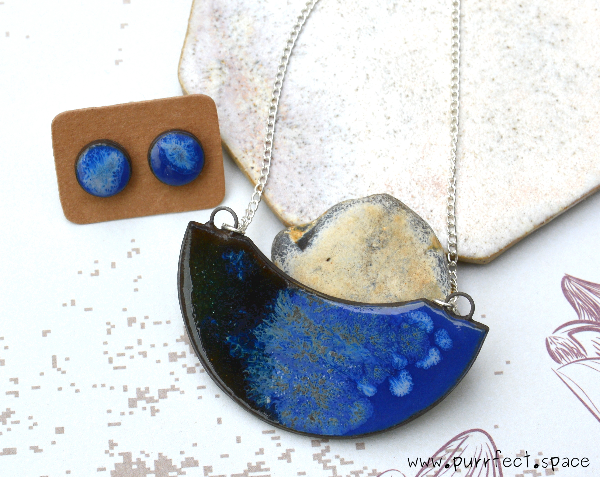

Welcome to my Etsy shop! I'm glad that you stopped by to take a look around and I hope you are having a
great
time !
Purrfect Space is my little piece of the world where I share my handmade items.
Most of them are made from materials not typically associated with jewellery which gives them this
special
look
and
feel.
Don’t be afraid - they wear same or better than traditional ones !